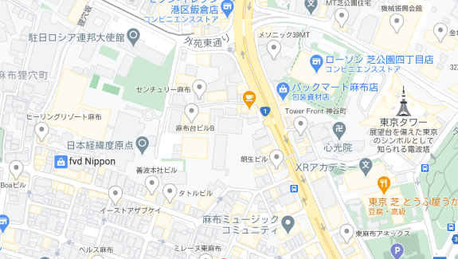

CONTACT
鮨いち
03-3364-4801
営業時間 平日 17:00~24:00 水曜定休
落ち着きの空間で心を尽くしたおもてなしに身を委ねる、格別な一時を。
皆様のご来店を心よりお待ちしています。
INFORMATION
鮨いち
| ADRESS | 〒164-0003 |
|---|---|
| 東京都中野区東中野3丁目9-9 | |
| TEL | 03-3364-4801 |
| TRAIN | 〜駅より徒歩10分 |
| LUNCH | 土曜・日曜 11:30~15:00 |
| DINER | 平日 17:00~24:00 |
| CLOSE | 水曜定休日 |

SEE ON GOOGLE MAP